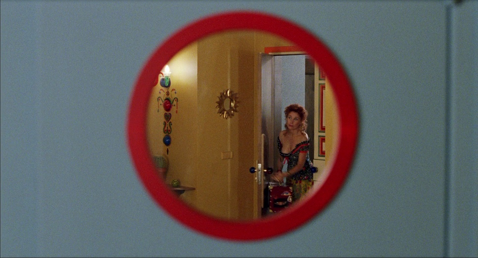
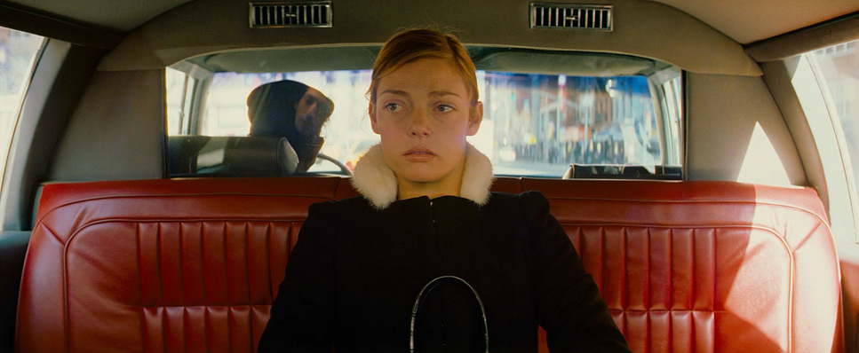
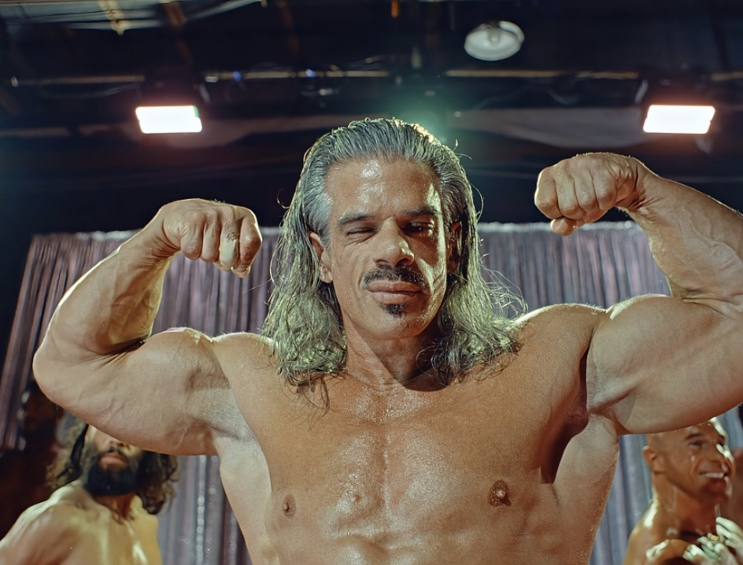
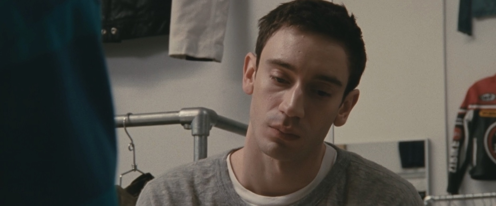
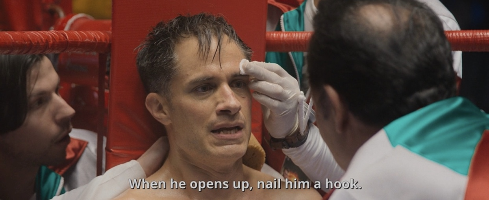
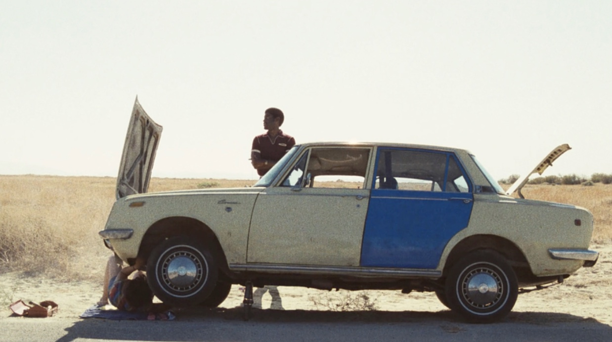
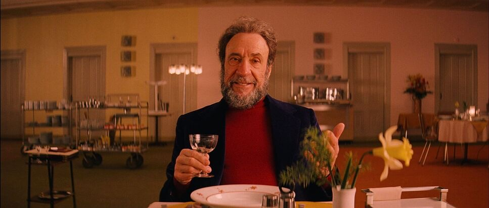
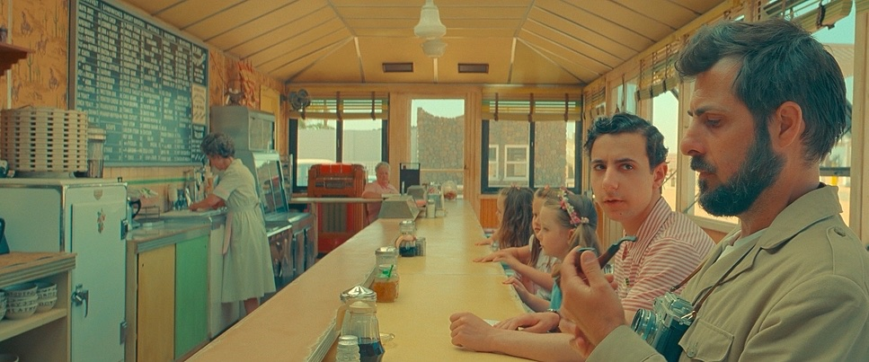
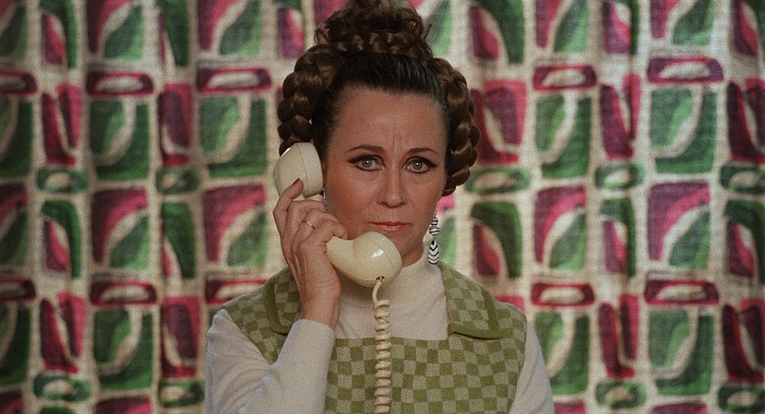
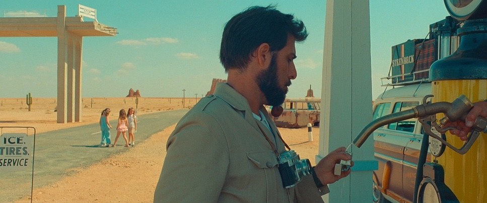

I'm Carlton Lorenz.
When the Honey Department brief landed, I read it twice and immediately wanted in. The references — Andersson, Owens, Parr, Errol Morris — are the references. The premise is the kind we'd write for ourselves on a good day.
This deck is how we'd make it. Two films, fourteen characters, one tone, plenty of room for honey to just be in the room.


Everything in this campaign rises or falls on tone. The reference filmmakers — Andersson, Owens, Parr, Morris, Tati — share one rule. The humor never comes at the subject's expense.
Comedy here is comedy by noticing. We hold the frame one beat past comfortable. We let the room talk. The honey is a guest in the shot, not the point of the shot. The eater is the eater. The honey is just what they happen to be eating.
Done well, the films feel like documentaries that happen to have a brand in them. Done poorly, they feel like ads with a quirk filter. We know the difference.
Fourteen specific people. The films don't keep inventing new characters — they follow these. Each one shows up across the campaign, doing what they do, eating what they eat.
Gen. "Mo" Greaves · U.S. Army · base commander, Fort Bragg
35-year career. Two combat tours. A chest you can read.
Spends Sunday afternoons assembling 1/72-scale model frigates with tweezers. Hasn't said "I love you" out loud since the early Reagan administration. Eats his Honey Dept. in the four-minute window between meetings.
Greaves dismisses a lieutenant with a single word that visibly ages the room, waits for the latch to click, and releases a smile no outside observer has ever seen. He squeezes a Honey Dept. into his mouth with the giddiness of a six-year-old opening a present.
Goes with command authority. Goes with privately weeping at the end of Brian's Song.
Independent dog walker · Upper East Side

31. Charges $400 per walk. Twelve dogs in her standing rotation.
Bangs cut by a stylist who flies in from Milan. Calls every dog by its owner's last name. Owns no dogs.
Cory carves down Madison Avenue at a 7-minute mile, fifteen dogs in formation, sunglasses on at 8am. She produces a Honey Dept. and squeezes it into her mouth without breaking pace, eye contact, or expression.
Goes with prenups. Goes with hating the suburbs out loud at parties.
Third-generation apiarist · Lehigh County, PA

58 years old. Eleven thousand career stings.
Names every queen after a 1940s starlet. Drinks one Schlitz a night. Hasn't been to a movie theater since 1979 but reads every review in the Sunday paper.
Linwood collapses into a folding chair at the edge of his apiary, peels off the mesh helmet, and squeezes a Honey Dept. directly into his mouth while ten thousand of his own bees swarm somewhere just out of frame. He doesn't flinch.
Goes with grief you've made peace with. Goes with whatever Hedy Lamarr is doing right now.
"Rome" · Muscle Beach regular · occasional personal trainer

44. Owns fourteen cut-off sweat suits, all gray, all from 1991–1994.
Calls his mother at 4pm every day without fail. Cried at Coco and tells everyone. Bench: 405.
Rome is pinned under the bar mid-rep, veins doing veiny things, when his spotter Brick lowers a Honey Dept. tube to his lips and squeezes. Rome racks 405 like he's setting down a teacup.
Goes with crying alone in the parking lot. Goes with telling everyone you're fine.
"Ren" · amateur cyclist · lifelong last-place finisher

29. Belgian-American. Four straight gran fondos in the bottom 5%.
Studio apartment with three Pinarellos and a betta fish named Doping Allegation. Has never laughed at a joke in front of a witness.
Ren pulls onto the shoulder mid-cramp, dismounts with surgical care, and is mid-squeeze of a Honey Dept. when a passing F-150 launches a sheet of brown roadwater across his entire person. He keeps squeezing.
Goes with European cinema with subtitles. Goes with anti-monarchist sentiment.
"Marge" · standing bingo regular · Our Lady of Sorrows Senior Center

81. Same seat, Tuesdays and Thursdays, for 23 years.
Won $2,400 in 1987 and hasn't won since. Carries a small framed photo of a stranger she found on the side of Route 17 in 1974. Will not speak to her sister.
Marge is two squares from a vertical when the caller goes "B-11" and the room exhales. Without looking up from her card, she retrieves a Honey Dept. from her purse and squeezes it like she's daring God to make her wait one more minute.
Goes with bingo. Goes with knowing the exact number of days since.
Officers Tedesco & Pencillo · patrol partners · Cruiser 4-11
Partners 19 years. Parked behind the laundromat at 6:42am every weekday.
Frank reads the entire Pennysaver, including the classifieds. Pencil pretends to. Neither has pulled anyone over in a calendar year.
Frank and Pencil are mid-donut in their cruiser when Frank produces a Honey Dept. and drizzles a slow, careful zigzag across his honey-glazed. Pencil says nothing. Pencil reaches for the tube.
Goes with not pulling anyone over. Goes with marriages that work because nobody's home.
"Steph" · owner, Steph's House of Hair · Yonkers

36. Hair currently 11 inches tall.
Engaged five times to the same man, named Carl. Subscribes to four trade magazines and reads zero of them. Has worn the same perfume since 1984.
Steph is mid-blowout on a regular when she snaps her gum, mouths "hold on a sec, doll," and ducks behind the half-wall to squeeze a Honey Dept. into her mouth without disturbing a single follicle. She returns with the dryer immediately.
Goes with the affair the whole town knows about. Goes with one perfume forever.
Junior copywriter · mid-tier agency · Flatiron

27. Has not initiated a conversation since 2019.
Owns a tortoiseshell cat named Provision. Sat through his entire two-year relationship like it was a calendar invite he forgot to decline.
Devon's girlfriend of two years finishes her closing statement at the table, drops her napkin, and walks out of the restaurant. He waits one full beat, retrieves a Honey Dept. from his jacket, and squeezes it into his mouth with the expression of a man checking the time.
Goes with checking your phone immediately. Goes with the next text already coming in.
"Wez" · sole proprietor, Cottingham Painting LLC · Linden, NJ
52. Eats lunch out of the same Igloo cooler he's owned since 1989.
Watches a single coat of paint dry for the full eight-hour cure window without leaving the room. Has lived next to the same neighbor for 14 years and does not know his name.
Wez sits in a freshly painted room — eggshell, semi-gloss, eight hours of cure ahead — locked onto the drying wall like a man watching the final 90 seconds of an FA Cup final. He eats a Honey Dept. with the contained excitement of a fan who has waited a long time for this.
Goes with knowing the difference between eggshell and satin on sight. Goes with profound and unbroken silence.
Brother Pemwa (formerly Greg) · Buddhist monk, contemplative tradition

41. Ordained at 28.
Previously regional sales lead for a paper distributor in Akron, Ohio. Has not spoken on a telephone in thirteen years. Still dreams about printer toner.
Pemwa is mid-meditation, eyes closed, sustaining a sonorous "hmmmmm," when he reaches into his robe, produces a Honey Dept., and the hum opens into an unmistakable "mmmmm." His eyes pop wide. Nobody is in the temple to see it.
Goes with a past you no longer claim. Goes with five-pound bags of jasmine rice.
"Sweet" Sammy · journeyman middleweight · 17–9–1

28. Trains in a Bronx gym that hasn't been painted since the Reagan administration.
Talks to his dead father between rounds. Reads only the obituaries. Plays no music.
Sammy slumps onto the stool between rounds, mouthpiece out, eyes blooming. His cutman brushes a cut, his trainer shouts something neither of them hear, and Sammy squeezes a Honey Dept. into his mouth like a man reading mail.
Goes with losing on points. Goes with calling your mother after every fight, win or lose.
"Vass" · window cleaner · the Equitable Building, 47th floor

47. Came over from Lviv in 1998. Started in scaffolding, climbed up.
Wife back home, daughter in Edmonton he has never met. Sings opera on the rig. Loudly, badly, with great feeling.
Vass appears inside a foam-covered window 600 feet above 7th Avenue and squeegees a slow clear arc through the lather, revealing himself: one hand on the rubber, one hand on a Honey Dept., singing something operatic and unbothered. The city is silent behind him.
Goes with calling Edmonton long-distance. Goes with whatever Pavarotti would have wanted.
Married 23 years · on their way to a wedding they don't want to attend

Their 2003 Volvo has been "fine" for the entire trip.
Lance refuses to call AAA. Bernadette will not suggest it. They have carried three tubes of Honey Dept. in the glove box for nine years. This is what they're for.
The Hoags sit on the shoulder of I-78 watching their hood release a confident jet of steam when a Good Samaritan in a Subaru rolls down a window and asks if they need help. They light up, beam, and underhand a tube of Honey Dept. through the open window. He drives off.
Goes with weddings you don't want to attend. Goes with marriages that work because of small, generous acts.
"Eat it near a horse. Eat it in a stairwell you don't belong in. Eat it during the group photo, just slightly out of frame."



A vignette reel. Locked-off shots, one scenario per shot, one take per shot. Each beat lands in 4–8 seconds.
The VO threads them: "Eat it on the wrong train. Eat it while holding something fragile. Eat it mid-apology." The frame is the joke. The eater is straight-faced. The setting does the work.
We end on: "It's your honey."
Roy Andersson tableaux. Rigid centered or strict rule-of-thirds. Production design slightly heightened — wallpaper, fluorescent light, motel-bathroom green.
Wardrobe specific without being costume. Nobody in jeans-and-a-tee. Everybody in something a real person would actually own.
We cut on action, never on dialogue. The VO is allowed to land into silence.
"Pairs well with ricotta toast. Also with timeshare scams, motel ice, and trying to appreciate jazz."



Pairing vignettes, 4–6 seconds each. A scene from ordinary life: a tanning bed, a sad ballet class, a formal dinner-for-one. Honey enters the frame. A super lands: "GOES WITH LATE-STAGE WELLNESS."
We rotate through 12–15 pairings. Some absurd, some tender, all observed.
Same world as Film 02 but with title cards integrated into the frame — set in brand mono, dropped into the negative space the production design leaves us. No graphic backgrounds, no shadows under the type.
Color graded a half-stop warmer than the Demographics films. Slightly more saturation. Just enough to read as a sister campaign, not a different one.
Every set we build, dress, or scout for this campaign is doing comedic work before anyone says a word. The walls have to be the right wrong color. The chair has to be the right wrong chair. We never decorate to a brief — we collect to a feeling.
Locations are real wherever possible. When we build, we build to look found. No production-design fingerprints. Andersson's rule: the production designer should be invisible, and slightly mean.
Each character carries a palette into their room. Honey is the warm note in every one.
Honest, specific, dated. The kind of room a particular person has actually lived in. Wallpaper that's been there a while.
Real garments. No costume. We dress to what a real version of this person owns. Tailoring is allowed; styling is not.
One signature object per character on screen — a medal, a nameplate, a bingo dauber, a Pinarello. Honey is always a prop, never a hero.
Mid-century beige, motel green, fluorescent pink, dust. Each location bringing its own. We don't grade them together; we let them argue.
Both films share a cutting rhythm. We hold each shot one beat past comfort. The longer we trust the frame, the funnier it gets. Tati's rule — if you cut on the laugh, you killed the laugh.
Across the campaign we'd build a single edit logic: open on a wide, hold on the eater, cut to the thing they're not noticing, return. Repeat. Vary.
Foley is doing as much work as picture. Every spoon scrape, every chair shift, every wrapper. The honey itself has a sound — slow, viscous, deliberate. We record it. It's the loudest thing in the room when we want it to be.
Sparse and instrumental. Strings, a single woodwind, occasional vibraphone. The score never sells the joke. It sits beside it.
One voice across both films. Warm, dry, slightly older than expected. We'd suggest a curated short list and tape early.





